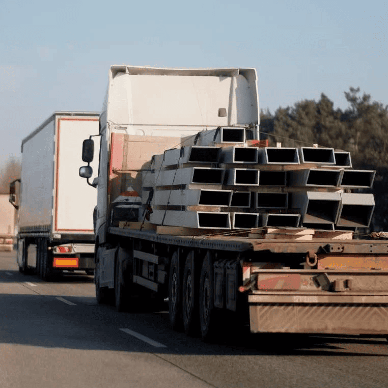

Transporte de Acero y Hierro
Servicio especializado en el traslado pesado de perfiles, tubos, bobinas y varillas de acero o hierro. Operamos con clientes del sector metalmecánico como Aceros Arequipa desde 2008.
Hasta 31 t
Plataforma para carga pesada.